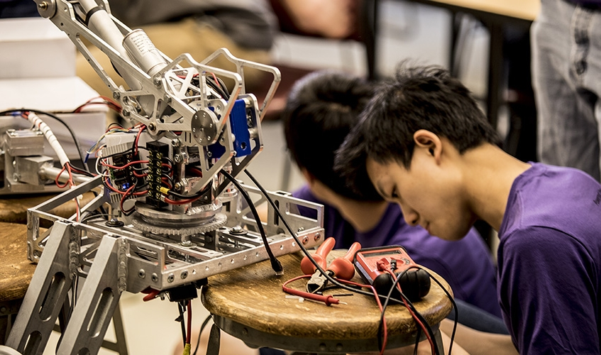

Robotics is the interdisciplinary branch of technology that deals with the design, construction, operation and application of robots. It aims to develop machines that can replicate human actions. Mechanical engineering is a significant branch in engineering, having to its credit the design and uses of some wonders such as aeroplanes, ships, automobiles, and automation. Robotics in mechanical engineering encompasses the composition and structure of robots. It aims to design intelligent machines that can help and assist humans in their day-to-day lives and keep them safe when used in dangerous environments.
Scope
Robots are effective in high-risk environments, like inspection of radioactive materials, bomb detection and deactivation and manufacturing processes. Robots may be made of any form and size. Still, the bio-inspired models are designed to resemble human conditions and can replicate human behaviours. They can simulate human speech, cognition, walking, lifting and other human activities. Robots may require user input to operate, while different types may function autonomously.
Applications
Robotics Engineering has a broad set of applications. Robots are used in the manufacturing, assembly, packaging, earth and space, transport, weaponry, surgery, research and mass production of consumer durables and industrial goods. On integration with IA, robots could learn to perform tasks more accurately, reliably and cheaply than humans.

Robotics in Industry
Robotics, automation, and artificial intelligence (AI) are expected to take control as the global industrial industry approaches its fourth revolution. The number of active industrial robots globally is rising by about 14% year on year, and automation results in new types of robots with increased usefulness and function. Future factories will most certainly include robots and people working together to fulfil customer demand – a unique environment for which business owners need to be prepared.